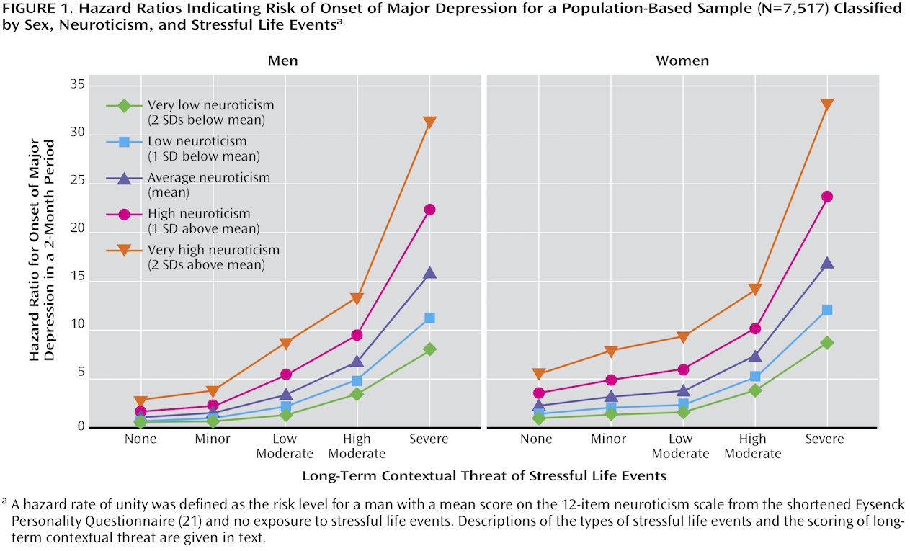
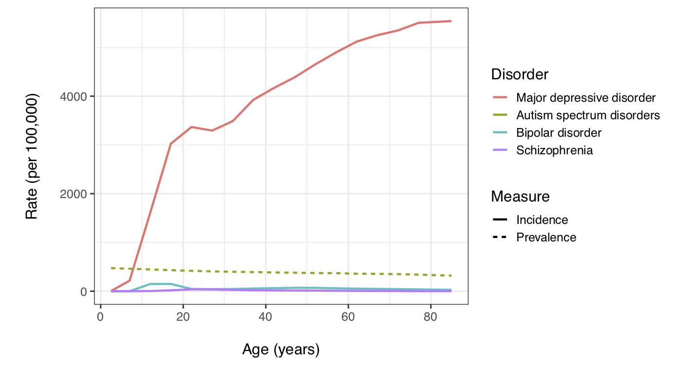
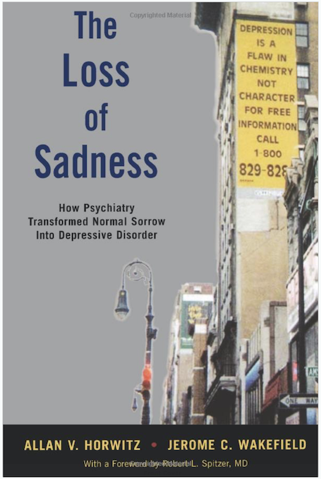

Virtually all mental health researchers accept that Major Depression (MD) is a mental disorder, i.e., a brain dysfunction. I argue that this widespread belief should instead be treated as an untested hypothesis, and further, that this hypothesis is probably false. Instead, most MD in the general population is probably severe but normal sadness or grief. Here are seven reasons why:
Most Major Depression is caused by adversity
Ordinary sadness and grief are caused by adverse events. I suspect that a common view about MD is that it fundamentally different, striking without cause, out of the blue. Most studies of MD do not even bother to measure recent negative life events. There is a consensus, however, that MD, too, is caused in large part by adverse events, and that events of higher severity increase the risk of MD. Many early studies found that about 80% of cases of MD had evidence of at least one adverse event (compared to a much lower rate among non-cases). See Figure 1.
More recent studies using twin designs have found similar results, and additionally show the interaction between adversity and vulnerability factors such as female sex and neuroticism (see Figure 2).

The stressful life events in Kendler et al. (2004) included:
- assault (assault, rape, or mugging)
- divorce/separation (divorce, marital separation, broken engagement, or breakup of other romantic relationship),
- major financial problem
- serious housing problems
- serious illness or injury
- job loss (laid off from a job or fired)
- legal problems (trouble with police or other legal trouble)
- loss of confidant (separation from other loved one or close friend other than a spouse or partner)
- serious marital problems (involving a marital or marriage-like intimate, cohabiting relation- ship)
- robbed
- serious difficulties at work
- serious trouble getting along with a close social partner
- serious personal crisis of a close social partner
- death or illness of a close social partner
Most of us hit by such adverse events would also experience low mood, sadness, loss of interest, insomnia, and other symptoms of MD. In fact, the study design of Kendler et al. (2004) instructed interviewers to rate the severity of the events as “what most people would be expected to feel about an event in a particular set of circumstances and biography….”
The causal effect of adversity on depression is most convincingly demonstrated by the finding that independent adverse events — those, like death of a loved one, that could not be caused by the depressed individual — are powerful predictors of MD.
Diagnostic criteria for Major Depression were not developed to distinguish the ill from the healthy but instead to distinguish MD from other psychiatric disturbances
Almost all research on Major Depression (MD) diagnoses it using either the Diagnostic and Statistical Manual (DSM) criteria, or the very similar International Classification of Diseases (IDC) criteria. The current DSM-V criteria are basically the same as those in DSM-III, which initiated the modern era of depression research. These criteria are listed in the right-most column in Figure 3.
At some point in their lives, everyone will experience at least one of these symptoms, and most of us will probably experience most of them. Prima facie, none indicate brain dysfunction. To be diagnosed with MD under the DSM criteria, a person must be experiencing 5 or more symptoms most of the day for at least two weeks, and at least one symptom must be sad or depressed mood (dysphoric mood) or loss of interest or pleasure.
Where did these criteria come from? You might think they came from studies designed to distinguish mental illness from normal sadness and grief. If so, you would be wrong. Instead, they come from studies that were conducted among groups of individuals who had already been determined to suffer from a variety of severe psychiatric disturbances (or physical illnesses). The goal of these studies was to develop criteria that would enable different psychiatrists to reliably provide the same mentally ill patient with the same diagnosis, such as bipolar disorder or schizophrenia, not to distinguish the mentally ill from the healthy.
Specifically, the DSM-III criteria can be traced to Stone and Burris (1950), which was a clinical study of 50 selected cases; Cassidy et al. (1957), which was a quantitative study of one hundred manic-depressive patients compared to fifty medically sick controls; Feighner et al. (1972), which was a study of 314 psychiatric emergency room patients and 87 psychiatric inpatients. And Spitzer et al. (1975), which tested the reliability of the Research Diagnostic Criteria (RDC) with 218 psychiatric inpatients. See Figure 3.
None of the studies that defined MD as we understand it today included any healthy participants, nor any identified as experiencing only ordinary sorrow, sadness, or grief. Hence, there is no reason to believe that, when applied to the general population, the criteria developed in these studies would effectively distinguish the tiny minority of individuals with a genuine mental illness from the much larger number of individuals who were suffering ordinary low mood, sadness, or grief.
As Kenneth Kendler, one of the world’s preeminent depression researchers admits, “most of the diagnostic categories and the diagnostic criteria they contain have been accepted for historical rather than strictly empirical reasons” (Lux and Kendler 2010).
DSM criteria (mis)applied to community populations generated massive prevalence rates
It is no surprise, then, that when DSM criteria were first applied to the general population they generated implausibly high prevalence rates of mental illness. Over a quarter of the population (28.5%) was identified as suffering a mental illness in the last year, and nearly half the population (48%) as having suffered a mental illness in their lifetimes. For MD, up to 10% were identified to have suffered an episode in the last year, and 17% to have suffered MD in their lifetime. See Figure 4.

Regier et al. 1998 acknowledged that these high prevalence rates called into question the validity of “diagnoses” based on DSM criteria in community populations:
Although it is possible that all of these community-based disorders are simply milder cases of essentially the same disorders seen in clinical settings, there are other possibilities as well. Based on the high prevalence rates identified in both the ECA and the NCS, it is reasonable to hypothesize that some syndromes in the community represent transient homeostatic responses to internal or external stimuli that do not represent true psychopathologic disorders. The human organism has a limited repertoire of response patterns to various physical, biological, and emotional stresses. Transient changes in blood pressure, pulse rate, body temperature, anxiety, or mood are not always indicators of pathology but of appropriate adaptive responses. It is possible that many people with currently defined mental syndromes (in particular among the affective and anxiety disorders) not brought to clinical attention may be having appropriate homeostatic responses that are neither pathologic nor in need of treatment — eg, other equivalents of grief reactions that meet clinical criteria but are not considered pathologic if they are time-limited.
Such eminently reasonable interpretations of MD in community populations have virtually disappeared from the scientific literature, and high prevalence rates are now reported without a bat of the eye. In the US, for example, the government reports that about 1 in 5 adolescent women (19.4%) suffered MD in the past year, i.e., putatively suffered a major disorder of the brain.
Really?
Regier, first author of the above quote, went on to co-chair the DSM-5 Task Force, which, ironically, was widely criticized for further medicalizing normal reactions to common life experiences. The most prominent critic was Regier’s predecessor, Allen Frances, chair of the DSV-IV Task Force. See, for instance, his book:
Robert Spitzer, chair of the DSM-III Task Force, expressed similar worries:
Regier and colleagues shot back that Frances’ and Spitzer’s criticisms were motivated by the loss of royalties from sales of DSM-IV products. Frances scoffed that these royalties were a relative pittance.
Depression is a continuum
If depression were a major brain disorder that could be identified by counting up symptoms that are common experiences, you might expect that folks with MD would stand apart from everyone else in the distribution of their symptoms. But they don’t. Although there is some debate, most studies have found that depression is dimensional, i.e., that it is “a quantitative elevation on a continuum of depression-relevant features found in all people” (Prisciandaro and Roberts 2005). As can be seen in Figure 6, there is no natural separation between those with lower depression scores and those with higher.

When Cassidy, developer of one of the historical antecedents to the DSM-III MD criteria (see Figure 3), was asked how he decided on the threshold, he replied, “It sounded about right” (Kendler et al., 2010).
There is no principled reason to conclude that higher scores indicate brain disorder instead of more severe sadness.
Major Depression usually remits in a few months
Many articles on MD emphasize that it is a chronic disease. This is not true for the majority of cases. The median duration of MD in a recent study of a nationally representative community sample was 6 months, and about 75% of cases remitted within a year. See Figure 7.

In addition, the majority of individuals who suffer MD will have a single episode in their lifetimes. A recent study based on a large, nationally representative sample found that, among individuals in remission from MD at baseline, the cumulative recurrence rate was 13.4% at 10 years, and 27.1% at 20 years (Ten Have 2018).
Onset of Major Depression is common at all adult ages
If MD were a genuine brain disorder, its epidemiology might resemble that of other genuine brain disorders, such as the epidemiology of developmental brain disorders, which occur early in life, or the epidemiology of brain disorders related to aging, i.e., those that occur late in life.
To compare MD with such brain disorders, I used the Institute for Health Metrics and Evaluation data visualization website to display results from the 2017 Global Burden of Disease Study. Here are the results for MD compared to three common developmental brain disorders:

As you can see, new cases of MD are common starting in adolescence and throughout adulthood. In comparison, autism spectrum disorders are relatively rare and present at birth (hence prevalence rather than incidence is reported). Bipolar disorder and schizophrenia are also relatively rare, with peaks in incidence rates in late adolescence and early adulthood.
Similarly, although incidence of MD increases with age, it does not resemble other brain disorders related to aging, such as dementia, Parkinson’s or stroke, which are exceedingly rare until after the age of 40 or 50:

Neurophysiological differences associated with MD do not necessarily indicate brain deficits
MD’s status as a “real” illness is often justified by pointing to biological differences associated with depression. The Mayo Clinic, for example, on its info page for MD, only lists biological factors as causes of MD, such as physical changes in the brain, brain chemistry, hormones, and genetics (adversity, in contrast, is a “risk factor”). Several biological differences associated with MD are depicted in Figure 10:
The brain, however, is a biochemical machine. It is not surprising that individuals in different emotional states, such as depressed vs. non-depressed, have differences in brain neurophysiology. All brain functions involve neurophysiological changes in the brain. Your brain is undergoing countless chemical changes as you read this post. If you remember anything you’ve read, for example, your brain has undergone some long-term chemical changes in synaptic connections between neurons. Differences in subjective experiences must be caused by physical differences in the brain. Indeed, if there weren’t biochemical and neurophysiological changes underlying MD this would be a shocking finding that would shake our materialist conception of the brain to its core.
Moreover, none of the studies I’ve seen of neurophysiological and biochemical differences in those with MD could distinguish differences from deficits, even in principle. Every study I’ve looked at has the following design: a group of participants that meet diagnostic criteria for MD are compared to a group of “healthy” controls, i.e., individuals without MD. But most of the individuals with MD are (1) experiencing sadness or low mood (one of two necessary symptoms), and (2) have suffered recent adversity. Most members of the control group, in contrast, are not experiencing sadness or low mood, and have not suffered recent adversity. Hence, MD is almost completely confounded with sadness and recent adversity.
All of the neurophysiological and other differences in Figure 10 that are identified as “impairments” or “pathophysiological features” are simply differences whose implications are currently unknown. They could easily be some of the biological bases of normal sadness and other functional responses to adversity.
Summary
MD is caused by adversity, such as loss of a loved one; it is characterized by symptoms such as sadness, low mood, and loss of interest, which most people experience when they experience adversity; it is diagnosed when the count of such common symptoms exceeds an arbitrary threshold; it is common among adolescents and adults of every age in the general population; it usually lasts for no more than a year; and most people will experience at most one episode in their lifetimes. Taken together, these facts provide considerable evidence for the hypothesis that most MD in the general population is simply severe sadness or grief.
I am far from the only one to make this argument. Horwitz and Wakefield wrote a book on it (note the Forward by Robert Spitzer, chair of the DSM-III effort):

If these arguments are correct, why do mental health researchers cling to the axiom that MD is a serious brain disorder, instead of treating this as a hypothesis? Here are a few possible reasons:
- Many psychiatrists form their initial intuitions about MD by working with inpatients. MD in these clinical populations can look quite different from MD in the general population. Because these individuals refer themselves, or are referred by family members, for psychiatric treatment, their MD tends to be chronic, recurring, and have little connection to recent adverse events, making it seem much less like “normal” sadness or grief. Such rarer forms of MD are better candidates for a genuine disorder.
- $$$. The NIH budget for depression research is approaching half a billion dollars annually ($466 billion in 2018). Sales of antidepressants are generating revenues of around $11.6 billion annually. And Big Pharma kicks back a lot of bucks to “thought leaders” in medicine, including psychiatry. The flow of all these dollars depends on MD being a serious illness rather than ordinary sadness.
- Szasz was right: psychiatry aims to control undesirable behavior, and severe sadness and grief are aversive to sufferers and often inconvenient for social partners and employers.
- It’s politically incorrect to question the illness axiom, perhaps because it runs counter to the laudable effort to reduce the stigma of mental illness.
Regarding #4, viewing mental illness as an ‘illness like any other’ and promoting biogenetic causes have been thought to reduce stigma. Larkings and Brown (2018) conducted a systematic review of the impact of biogenetic beliefs regarding mental illness on stigma. They found, on the contrary, that among the public:
Overall, these reviews suggest that there are mixed ramifications associated with public endorsement of biogenetic causes. While biogenetic causes might help reduce blame, they might also contribute to negative consequences, such as increased perceived dangerousness, social distance, and pessimism around prognosis.
Among the mentally ill and mental health professionals, things were even worse:
The present review indicates that the endorsement of biogenetic causes does not reduce stigma in people with mental illness and in mental health professionals, and might actually increase stigma and negative attitudes towards mental illness.
Finally, even if most MD is normal sadness and grief sufferers will often still need help, sometimes from professionals. Much of my research and that of my grad students explores the possibility that some aspects of MD function to signal need to social partners. Treatment, though, would focus on solving real-life problems rather than altering brain chemistry.
You can find papers on my evolutionary approach to depression here:
Addendum (2018/12/21)
If most MD, as it is currently diagnosed, is not disorder, should we keep calling it Major Depression? Wakefield’s answer, and I think it’s a good one, is no. The term Major Depression should be reserved for genuine disorder, leaving many, if not most, cases of MD in the community as false positives (e.g., Wakefield and Schmitz 2013; Wakefield 2016). That is, the criteria in Figure 3 are insufficient to distinguish functional responses to adversity, such as sadness and grief, from disordered responses. Additional criteria that might reduce false positives include MD-levels of symptoms in the absence of adversity, that the severity of the response is disproportionate to the severity of the adverse event, persistence of symptoms well past the adverse event (e.g., more than a year), or a high rate of recurrence.
- 2019/09/22: rearranged order of sections; minor edits for clarity
- 2022/05/22: updated epidemiology plots